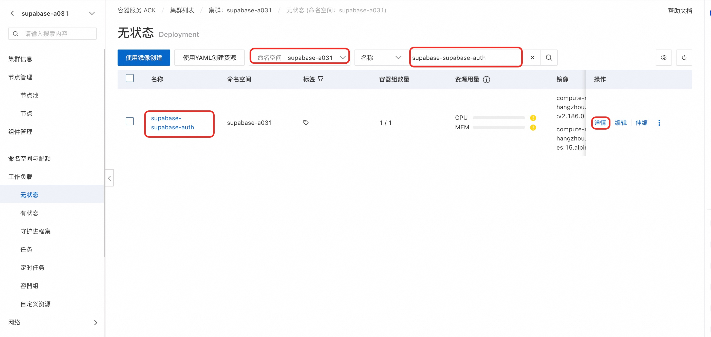
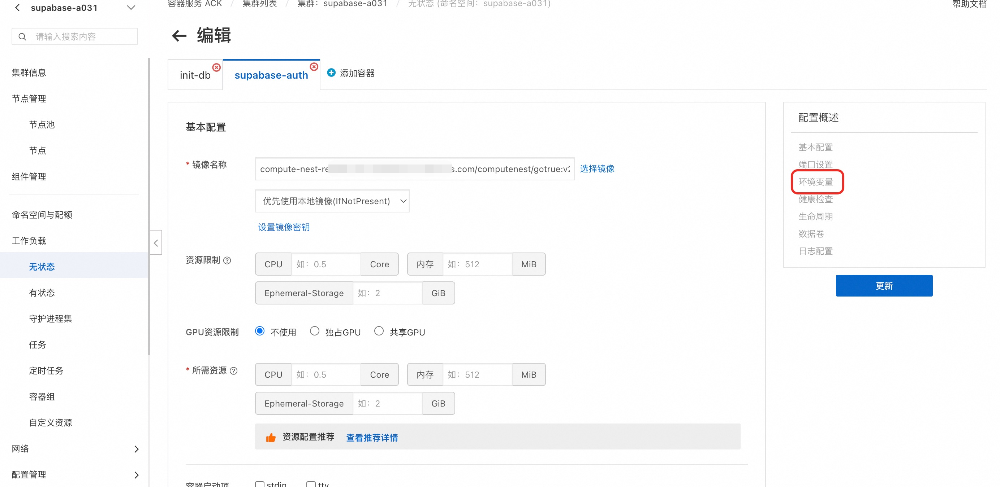

开源 Supabase 配置指南
一、部署参数
| 参数 | 必填 | 说明 |
|---|---|---|
ClusterId |
是（仅已有集群版） | ACK 集群 ID |
DeploymentNamespace |
否 | 部署命名空间，留空用栈名 |
DashboardUsername |
是 | Studio 控制台用户名 |
DashboardPassword |
是 | Studio 控制台密码 |
DbPassword |
是 | PostgreSQL 密码，仅字母数字 |
JwtSecret |
是 | JWT 密钥，≥32 位 |
OAuthProvider |
否 | none / github / google |
OAuthClientId |
选 OAuth 时必填 | OAuth App Client ID |
OAuthClientSecret |
选 OAuth 时必填 | OAuth App Client Secret |
EnableSaml |
否 | true / false（默认 false） |
SamlIdpMetadataUrl |
开 SAML 时必填 | IdP Metadata URL |
SamlDomain |
开 SAML 时必填 | 登录邮箱域名 |
Manager 模板参数（接入开源 Supabase）
SupabaseDeploymentMode 选 UseExistingOpenSource，填写：
| 参数 | 说明 | 来源 |
|---|---|---|
ExistingSupabaseUrl |
公网地址，如 http://IP:8000 |
Supabase 输出 SupabaseUrl |
ExistingSupabaseInternalUrl |
集群内网地址 | Supabase 输出 InternalUrl |
ExistingSupabaseAnonKey |
Anon Key | Supabase 输出 AnonKey |
ExistingSupabaseServiceRoleKey |
Service Role Key | Supabase 输出 ServiceRoleKey |
ExistingSupabaseDatabaseUrl |
数据库连接串 | Supabase 输出 DatabaseUrl |
二、集群配置命令
以下命令中 <ns> 替换为 Supabase 所在的 namespace。
设置 Site URL（部署 Manager 后必做）
kubectl -n <ns> set env deployment/supabase-supabase-auth \
GOTRUE_SITE_URL="http://<Manager-IP>:8080" \
GOTRUE_URI_ALLOW_LIST="http://<Manager-IP>:8080/"
kubectl -n <ns> rollout restart deployment/supabase-supabase-auth
配置 SMTP（启用邮箱认证）
kubectl -n <ns> set env deployment/supabase-supabase-auth \
GOTRUE_SMTP_HOST="smtp.example.com" \
GOTRUE_SMTP_PORT="465" \
GOTRUE_SMTP_USER="noreply@example.com" \
GOTRUE_SMTP_PASS="<密码或授权码>" \
GOTRUE_SMTP_SENDER_NAME="Agent Manager" \
GOTRUE_SMTP_ADMIN_EMAIL="noreply@example.com" \
GOTRUE_MAILER_AUTOCONFIRM="false"
kubectl -n <ns> rollout restart deployment/supabase-supabase-auth
手动开启 SAML
模板部署时设 EnableSaml=true 会自动完成以下步骤。手动维护时：
# 1. 生成私钥
openssl genrsa 2048 | openssl rsa -traditional -outform DER | base64 | tr -d '\n' > /tmp/saml-key.txt
# 2. 写入 GoTrue
kubectl -n <ns> set env deployment/supabase-supabase-auth \
GOTRUE_SAML_ENABLED=true \
GOTRUE_SAML_PRIVATE_KEY="$(cat /tmp/saml-key.txt)" \
GOTRUE_SAML_EXTERNAL_URL="http://<Supabase-IP>:8000/auth/v1" \
API_EXTERNAL_URL="http://<Supabase-IP>:8000/auth/v1"
kubectl -n <ns> rollout restart deployment/supabase-supabase-auth
# 3. 注册 SAML Provider
curl -X POST "http://<Supabase-IP>:8000/auth/v1/admin/sso/providers" \
-H "apikey: <ServiceRoleKey>" \
-H "Authorization: Bearer <ServiceRoleKey>" \
-H "Content-Type: application/json" \
-d '{"type":"saml","metadata_url":"<IdP-Metadata-URL>","domains":["example.com"],"attribute_mapping":{"keys":{"email":{"name":"email"}}}}'
IdP 侧填写：
- Entity ID / Metadata URL: http://<Supabase-IP>:8000/auth/v1/sso/saml/metadata
- ACS URL: http://<Supabase-IP>:8000/auth/v1/sso/saml/acs
查看当前配置
# GoTrue 环境变量
kubectl -n <ns> get deployment supabase-supabase-auth \
-o jsonpath='{range .spec.template.spec.containers[0].env[*]}{.name}={.value}{"\n"}{end}' \
| grep -iE 'SITE_URL|SMTP|SAML|MAILER|EXTERNAL_URL'
# Auth Settings API
curl -s "http://<Supabase-IP>:8000/auth/v1/settings" -H "apikey: <AnonKey>" | python3 -m json.tool
三、通过 ACK/ACS 控制台修改配置
不习惯 kubectl 命令行的用户，可以在阿里云容器服务控制台操作：
- 登录 ACK 控制台 或 ACS 控制台，进入对应集群。
-
左侧导航 工作负载 → 无状态（Deployments），选择 Supabase 所在的命名空间。找到
supabase-supabase-auth，点击名称进入详情。
-
点击右上角 编辑 → 环境变量，可直接添加或修改以下变量：
GOTRUE_SITE_URL— Manager 公网地址GOTRUE_URI_ALLOW_LIST— Manager 公网地址GOTRUE_SMTP_HOST/GOTRUE_SMTP_PORT/GOTRUE_SMTP_USER/GOTRUE_SMTP_PASS— SMTP 配置GOTRUE_SMTP_SENDER_NAME/GOTRUE_SMTP_ADMIN_EMAIL— 发件人信息GOTRUE_MAILER_AUTOCONFIRM— 设为false开启邮箱验证GOTRUE_SAML_ENABLED/GOTRUE_SAML_PRIVATE_KEY— SAML 配置-
GOTRUE_SAML_EXTERNAL_URL/API_EXTERNAL_URL— 设为http://<Supabase-IP>:8000/auth/v1
-
保存后 Deployment 会自动滚动更新，等待新 Pod Running 即可。
四、Manager 控制台配置
部署完成后在 Manager 管理后台操作：
设置 Site URL
路径： /admin/sso-config → 回调地址配置
界面保存会返回 501，需通过 kubectl set env 或 ACK/ACS 控制台设置 GOTRUE_SITE_URL（见上文）。
配置 SAML SSO
路径： /admin/sso-config
- 页面会显示 SP 信息（Entity ID、ACS URL），复制到 IdP 侧配置应用。
- 在 IdP 获取 Metadata URL 后，点击「添加 SSO 配置」，填入 IdP Metadata URL 和邮箱域名。
- 在页面顶部「登录模式」下拉选
saml，保存。
配置 OAuth
路径： /admin/sso-config
- 在第三方平台（GitHub / Google 等）创建 OAuth App，回调地址填
http://<Supabase-IP>:8000/auth/v1/callback。 - 在 Supabase Studio 控制台（
http://<Supabase-IP>:8000）→ Authentication → Providers，启用对应 Provider 并填入 Client ID / Secret。 - 回到 Manager
/admin/sso-config，点击刷新，确认 Provider 状态为已启用。 - 登录模式选
oauth，保存。
配置邮箱认证
路径： /admin/email-auth
界面开关不可用（返回 501），需通过 kubectl set env 或 ACK/ACS 控制台配置 SMTP 环境变量（见上文）。配置完成后界面会自动检测到 SMTP 已配置和邮箱认证已开启。